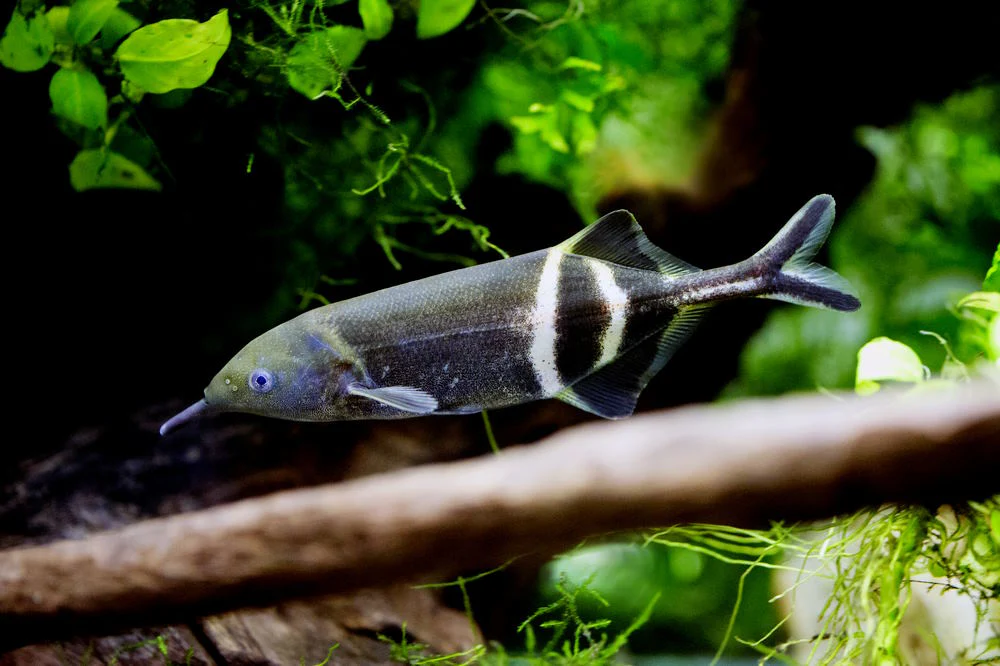
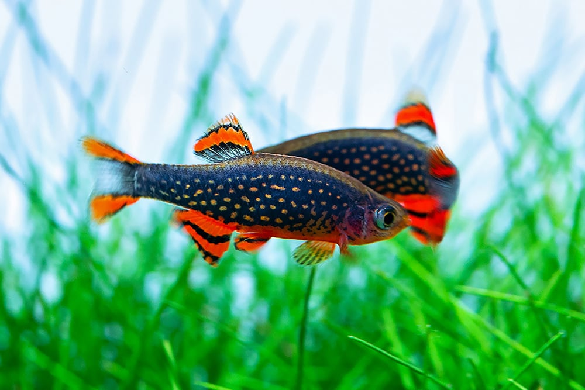

Novo
Peixe diferente para seu aquário!
O Gnathonemus petersii, conhecido popularmente como peixe Nariz de Elefante, está chamando a atenção dos aquaristas por sua aparência única e comportamento intrigante. Nativo de rios africanos, esse peixe possui uma protuberância em forma de "nariz" que, na verdade, é uma extensão sensorial usada para localizar alimentos no fundo dos rios e detectar mudanças elétricas na água, tornando-o uma das espécies mais incomuns no aquarismo.
Além de sua curiosa estrutura, o peixe Nariz de Elefante é conhecido por ser inteligente e sensível, preferindo ambientes com baixa iluminação e muitos esconderijos. Embora exija cuidados específicos e condições de água impecáveis, ele está ganhando espaço em aquários exóticos devido à sua aparência e habilidades incomuns, sendo ideal para aquaristas mais experientes.

Top 10 Nano Peixes para Aquários: Espécies Ideais para Pequenos Tanques
Para quem tem aquários pequenos, os nano peixes são uma excelente escolha por seu tamanho compacto e facilidade de manejo. Entre os mais populares, o Tetra Néon e a Rasbora Arlequim se destacam pelas cores vibrantes e comportamento pacífico, ideais para aquários comunitários. Outras boas opções incluem o Corydora Pigmeu, que ajuda na limpeza do fundo, e o Betta Imbellis, que traz beleza sem o temperamento agressivo do Betta comum. Espécies como o Guppy e o Tetra Ember são conhecidas por sua reprodução fácil e coloração chamativa, dando vida a aquários menores.
Peixes menores como o Killifish Clown, Peixe-Arroz e Peixe Borboleta Afra são ideais para quem busca variedade e movimento em aquários plantados. Cada um desses peixes mede entre 2 e 5 cm e prefere viver em cardumes, o que aumenta sua interação no aquário. Com cuidados básicos como a manutenção da qualidade da água e a criação de ambientes ricos em plantas, esses nano peixes podem transformar pequenos tanques em verdadeiros ecossistemas vibrantes.